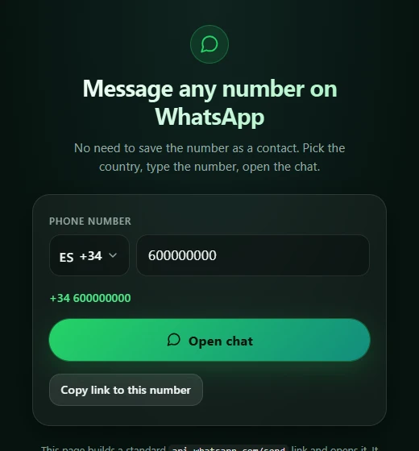

WhatsApp Without Saving a Contact
Message any number,
save no contact.
1
Type the number
2
Press
Open chat
3
Chat,
no contact saved

+34 600 000 000
Not in your contacts
Hi! Is the flat still for rent?
Yes, come see it on Friday.